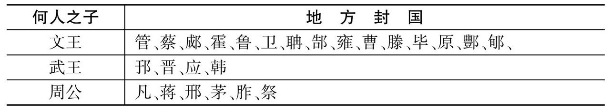
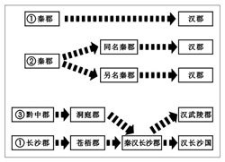
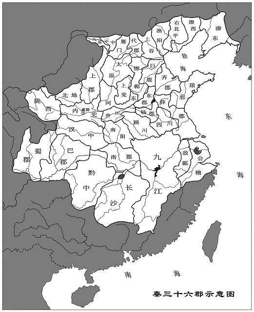
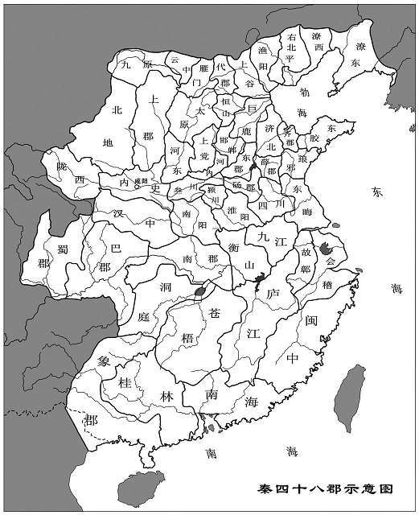
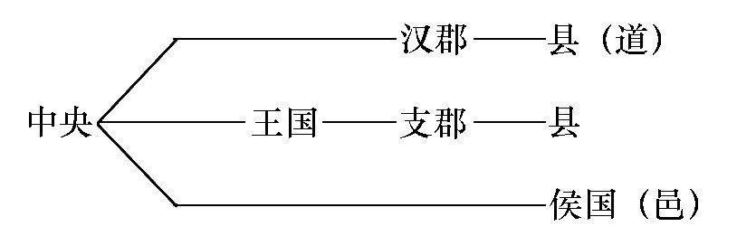
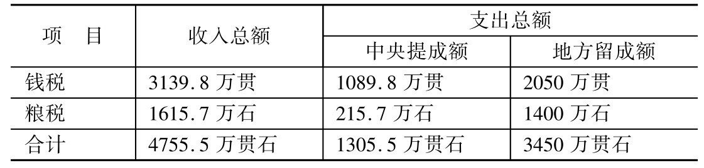
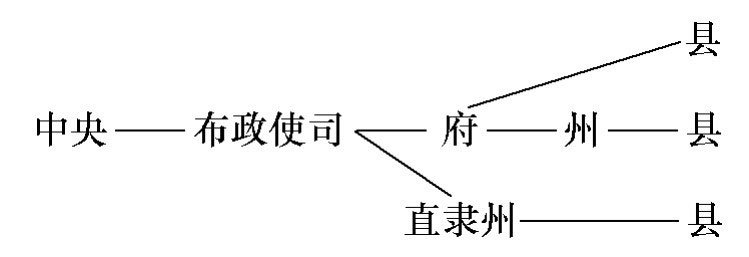

中国古代地方行政制度与行政区划
作者：韩茂莉
按：选自《中国历史地理十五讲》
中国古代地方行政制度与行政区划涉及政治与地理两个问题。自从人类社会摆脱蒙昧，进入文明时代，政治与地理就成为一对孪生兄弟。无论凭借政治建立的社会还是通过政治赢得的权益，均牢固地植根于大地上。站在全球的视角下与历史的长河中，古今中外，大多数国家只要领土足够大，都会将领土划分为若干空间单元，逐层派官员进行管理，这些空间单元就是行政区，划分行政区的过程则为行政区划。行政区是国家对地方进行行政管理的空间区域，行政区划则是根据政治需求与地理原则确定施政范围的过程。地方行政制度与行政区划，前者体现的是政治的空间，后者涉及的是空间的政治，两者共同构成政区地理的核心。
地方行政制度是国家为了方便行政管理而划分行政区域、设立地方分治机构的制度与措施。由于地方行政制度服从于国家管理地方的需要，因此国家政治制度不同，地方行政制度必然不同。自夏、商、周三代中国历史进入国家阶段，以公元前 3 世纪秦始皇统一列国为界，此前属于分封制时期，自秦代进入郡县制时期。作为国家政治制度，分封制与郡县制两个时期国家实现政治统治的原则和方式完全不同，前者具有共主政治的特点，后者则表现出鲜明的集权政治，由于国家政治制度的差异，建构了完全不同的地方行政制度。两套性质不同的地方行政制度不仅带来了国家政治的差异，也在政治与地理的交融中营造出值得深思与回味的历史。
历史政区地理素来是中国历史地理关注的要点。20 世纪 70 年代谭其骧主编的《中国历史地图集》问世，凭借地图将中国历代疆域与行政区变化直观地展示出来，不仅成为学术界研究中国历史的钥匙，也成为国内外认识中国的基础。80 年代周振鹤《西汉政区地理》出版，不仅研究了西汉时期政区的变迁，而且为这一研究领域开启了一扇门。此后，周振鹤及其后继者陆续完成的研究，以更清楚的线条揭示了历代政区地理的重要问题。
一 分封制与政治空间管理
分封制也称封建制，封建就是封邦建国。邦与国的受封者不仅是受封土地的管理者，也是这片土地的实际拥有者，因此分封制下的国家具有共主政治特点，即天子与土地的受封者均为有土之君，共同拥有天下。
中国历史上作为国家的政治制度，分封制截止于秦始皇统一天下，即公元前 3 世纪，而这一制度起始于何时却难以明确，因此是一个说得清下限却说不清上限的问题。以夏、商、周三代国家的政治制度、政治地理为主题的研究几乎均出自 20 世纪前期的学术大师及其后继者，本讲根据他们的研究择其精要，将主要结论纳入到地理学的视角下，进行再认识。
（一）夏商两代政治制度与领土组合形式
夏、商、周是中国历史上的早期国家，迄今为止对于三代中夏的研究还没有发现直接的文献记载，大家对于这段历史的认识主要依赖夏以后历史文献中的追溯或传说。20 世纪中期考古学界在豫西、晋南取得的成果，揭示了夏王朝存在的事实。对于夏王朝实行的政治制度，司马迁称：「禹为姒姓，其后分封，用国为姓，故有夏后氏、有扈氏、有男氏、斟寻氏、彤城氏、褒氏、费氏、杞氏、缯氏、辛氏、冥氏、斟戈氏。」 若依司马迁的记载，几乎可以认为这一时期已经实行分封制了；但更多的历史文献对于夏王朝的追溯，却将这一时期推向由野蛮迈向文明的肇始阶段，氏族为这一阶段的主要社会组织，基于氏族形成的部落、部落联盟乃至方国构成了国家。《吕氏春秋·用民》称「当禹之时，天下万国」，用以表明包容在国家之内的构成者之多。目前的研究认为《史记》提及的夏后氏为夏朝王室，有扈氏、有男氏等均为夏后氏的同姓亲属部落，夏王朝之内除同姓亲属部落之外还存在异姓部落。氏族是建立在血缘基础上的社会组织，而其形成与发展的必要条件就是空间，即氏族以及以氏族为基础形成的部落原本就拥有土地，因此与夏王室同姓的亲属部落拥有的土地是否如《史记》所载通过分封获得，并没有得到证实，但异姓部落的土地全然与分封无关，即这些部落、方国是携带自己的土地加入到夏王朝政权之内的。若从这一角度看待这一时期的国家政治，构成国家的部落、部落联盟、方国拥有的土地不但不是通过分封获得，反而国家却是由部落、部落联盟、方国的土地组合而成的。
进入商代，大量甲骨卜辞、彝器铭文的存在使这一时期国家的政治制度与地方管理方式在研究者的探讨中越来越清晰。商代国家的政治空间与地方管理分为内服与外服两个圈层，内服、外服也被称为王畿、四土，王畿与四土均为商王朝版图之内的疆土，而疆土之外则被称为四至。王畿、四土、四至构成的圈层不仅对应着具体的空间地域，而且也存在不同的政治属性与管理方式。属于内服的王畿是商王直接掌控的政治区域，具体管理由商王派遣百官臣卿进行，因此这一区域不实行分封制。王畿的东界为濮阳，东南至商丘、杞县、禹县一线，西北为修武至沁阳一线。王畿之外属于外服，这是商王的间接控制区，主要有诸侯、方国等。商代诸侯身份的获取途径并不相同：第一类由派往当地的职官或军队驻守的据点转变为诸侯；第二类为子弟受封为诸侯；第三类属于归顺商王朝的方国受封为诸侯。三类诸侯中，前两者无论是在商王指派下由职官管理的地方，还是军队驻守的据点，乃至分封给子弟的土地，均来自于商王即国家所有，具有真正意义上「裂土封侯」的特征；而第三类归属商王朝的方国则不同，他们拥有的土地不是「裂土」而得，而是通过政治性的归属，将自己的土地纳入到商王朝领属之内，与商王朝原有土地组合在一起，构成商王朝版图的一部分。内服、外服以外为四至，这是政治上不受控于商王朝，却在商文化影响范围之内的区域。由王畿、四土、四至构成的空间圈层，是商王朝政治控制与文化影响的基本范围，在这一范围内随着距离政治核心越来越远，商王朝的控制力也逐渐变弱。《尚书·禹贡》中载有五服与九州两套空间系统，其中五服表述的应是商代政权与空间的关系。 从王畿向外每五百里为一个圈层，甸、侯、绥、要、荒五个圈层距离越远，王朝的控制力渐弱，与此对应的是对于国家履行的义务不断减少。当然，五服表现的只是商王朝政权与空间关系的理想模式，事实上商王朝的领土从王畿到蛮荒既不存在如此规整的空间圈层，也未必具备圈层延伸的范围，且在地广人稀、政治力量不足的背景下，商王朝的领土具有不连续分布的特点，无论内服还是外服均存在无人控制的地域，处于原生态之状，或为外族活动的空间。
历史地理的着眼点在于地理，站在地理学视角审度夏、商两代的政治制度，夏代是否存在分封制尚不能断言，商代确实存在具有分封制特征的土地领属形式。但商代在外服建立的诸侯，与西周时期实行的制度并不完全一致，存在裂土与组合两种形式：裂土是将国家的土地封授与人，组合则将外族的土地纳入国家所属之中。因此这两种形式的分封，在建构国家领土的同时，也决定了商王朝政权对于空间的掌控，具有由具体到形式、由实到虚、由紧至松的基本关系。
（二）西周时期的分封制与政治地理
西周时期全面实行了分封制。在解读西周分封制及其政治地理格局之前，首先需要简述的是分封制的社会基础与执行方式。分封制的核心是宗法制，而维系宗法制的基础为嫡长子继承制。在分封制的系列中，天子、诸侯、卿大夫自上而下构成不同的层级，无论哪一层级，嫡长子（正室妻子所生长子）均是继承者的唯一选择，嫡长子之外的其他儿子则属于分封对象。周天子处于分封系列的顶点，嫡长子承袭天子之位，其他儿子则被分封为诸侯；诸侯国君嫡长子承袭国君之位，其他儿子则被分封为卿大夫；卿大夫嫡长子承袭大夫之位，其他儿子则为士。父子具有血缘关系，受封之地具有地缘特征，用血缘关系维持地缘政治是分封制的实质，即通过分封令自己人分布在各地，代天子守疆固土。
周人起于西方，自公刘之后迁入关中，并以此为起点，建立了自己的基业。周人灭商之前，属于商王朝统领下的西方小邦，随着武王伐纣，以周代商政治进程的推进，周人的版图不断向东方发展。面对新的政治形势以及东部那片并不熟悉的土地，周人对自己的疆土分别进行管理，这就是位于关中、洛阳及其毗邻地区的王畿与东部的分封之地。《汉书·地理志》载：「初洛邑与宗周通封畿，东西长而南北短，短长相覆为千里。」西周时期以宗周为中心的关中与以成周为中心的洛邑联为一体，构成王畿。王畿与封国不仅拥有各自的空间，而且实行完全不同的管理方式：王畿是西周国家的政治中心，受周王室的直接行政支配；封国则在周天子天下共主的名义下实行独立管理。西周版图之内虽然存在两种管理方式，但两种管理方式拥有的空间却不是对等的：周人起步于关中，故西周初期王畿拥有的空间优于封国之地；随着分封制的逐次推行，封国越来越多，不仅超越王畿之地，且形成明显优势。分封制背景之下，王畿与封国之间空间尺度的变化，不仅仅涉及地理，而且影响政治。
分封制并不是西周首创，但这一政治制度在实行之中却与商代有所不同。西周时期经历了两次分封。站在地理学的视角审度西周的两次分封，伴随变更封地与增加封国，西周经历着版图不断扩展与领属空间屡次增大的过程。周武王封同姓宗室周公旦于鲁（河南鲁山）、召公奭于燕（河南郾城）、异姓功臣太公望于吕（河南南阳） ，并将同姓贵族叔鲜封于管（河南郑县）、叔度于蔡（河南上蔡）、叔处于霍（山西霍县），号称「三监」以监视殷商遗民，这一分封范围集中在豫中、晋南。分封地的位置应是西周国家能够控制的区域，看得出来这时西周版图还限于王畿周邻之地。成王时期，周公平定「三监之乱」，东征成功后，于洛邑营建成周的同时实行第二次分封。这次分封首先更移旧封之地，更封周公之子伯禽至曲阜、太公之子至营丘（山东临淄）、召公至燕（河北蓟县），并新封康叔于卫（河南淇县）、微子启于宋（河南商丘）、唐叔于晋（山西）等七十一国，其后又陆续分封至数百国，其控制范围北至辽宁喀左旗、朝阳一带，西抵渭河上游陇东一带，东至于海，南到长江中下游。西周时期宗周、成周是周人的核心区，分封之初也在这一带形成姬姓集团的主要控制地。成王时期周公东征获得成功，将周人控制区大幅度地向东扩展。伴随这次空间扩展，周宗室的封地以更封的形式同步东移，并在周天子王畿之外形成次一级的政治圈层。
西周初期分封制中，受封者包括姬姓与非姬姓贵族，非姬姓贵族多为伐纣灭商或平定「三监之乱」的功臣。无论姬姓还是非姬姓，分封制的实行说明周天子不具备对于天下的全部掌控能力，他直接拥有的实力只能控制王畿，王畿以外则通过分封委托给他人管理。分封制这一委托政治特点，通过受封仪式中授土又授民两个内容表现得十分清楚。西周早期《盂鼎》铭文称「受民受疆土」，说的是受封者不仅得到土地，还同时得到土地上的民众。土地与立足在土地上的民众是两个不同的概念，土地是构成国家的实体，而民众则是支撑国家的基础。正因此，不仅《周礼》载有司空主土、司徒主民，且《左传》也有受封仪式中「聃季授土，陶叔授民」的记载，聃季与陶叔拥有的官职分别是司空与司徒。通过授土、授民，名义上周天子为天下共主，拥有「普天之下，莫非王土；率土之滨，莫非王臣」的权威，但事实上，从天子到诸侯，分封制近似于完全性的财产转移。诸侯不仅仅是封国内民众的管理者，而且是土地实实在在的拥有者，固然天子对于那些不臣服的诸侯拥有夺封与征讨的权力，但这样的权力仅在西周前期表现出实效，此后周天子为「名义共主」的特点越来越明显。西周分封制中，诸侯以下继续分封，但各诸侯国国君对于卿大夫采邑的控制能力却强于周天子对诸侯，这样的关系，如西欧中世纪关于附庸的理论所言，附庸的附庸，不是「我」的附庸。经过分封，天子名义上拥有天下，诸侯有国，卿大夫有家，分封制下国家分属于各自拥有实权的受封者，天子、诸侯、卿大夫皆为有土之君，因此天下、国、家具有相对独立的地位，此时的政治具有鲜明的分权特点。故《大学》中有齐家、治国、平天下之语，即构成国家的封地、封国治理好了，天下自然太平。
「普天之下，莫非王土；率土之滨，莫非王臣」，当周天子将王土、王臣封给诸侯，国家获得了什么？分封制通过授土、授民将王土、王臣的一部分转移给诸侯，这既是针对国家管理采取的政治制度，也是用利益换忠诚的政治举措。那些获得了王土与王臣的诸侯有义务拱卫王室，代天子守疆固土，并向天子纳贡、协助天子讨伐逆臣，所有这一切都是天子用利益换忠诚的结果。当然，用利益能否换取永久的忠诚，西周王室及其臣子自然考虑过这样的问题，「血浓于水」不仅是今天通行的道理，因此理论上姬姓诸侯比非姬姓诸侯更靠得住，利用姬姓诸侯牵制非姬姓诸侯，是其中一项方略。从诸侯国封地位置的政治地理特点不难看出其中的考虑。周初封国数量大约在数十到数百之间，荀子称「周公兼制天下，立七十一国」 ， 《吕氏春秋·观世》称「周之所封四百余，服国八百余」 ，司马迁则称「武王、成、康所封数百」 。虽然目前学术界尚不能确定封国数目，但有一点可以肯定，众多封国中姬姓诸侯占有明显的优势。荀子所言七十一国中，「姬姓独居五十三人」。李峰根据 20 世纪以来的考古成果、历史文献确定了部分姬姓封国的位置，《左传》所载西周早期建立的 26 个姬姓封国（见表 9-1）中，周武王少弟康叔所封卫国位于今安阳南 40 公里处，周公之子所封邢国位于今河北邢台，应国位于今河南平顶山，周公另外两个儿子所封之凡国、胙国分别位于今河南辉县、延津，武王的儿子所封邘国位于今河南沁阳，邘国两侧为武王两个弟弟的封国原（今河南修武）与雍（今河南济源市西北），蔡国位于河南上蔡，蒋国位于今河南淮滨，曹国位于今山东定陶县，距曹国不远的巨野泽南部还有郜国与茅国，这三个姬姓诸侯国分别为武王的两个弟弟与周公儿子的封国，今山东境内还有周公长子伯禽所封位于曲阜的鲁国，以及位于滕县的滕国与位于宁阳的郕国，此外位于今山西境内的当以晋国为要。 姬姓与周天子同姓，血缘关系使这些诸侯的可信任度高于非姬姓诸侯，其封国地理位置也自然处于关要之处。从上述已确定姬姓诸侯国所在位置可以看出，占有交通优势是这些封国主要的地理选择。其中卫国、邢国、凡国、胙国集中分布在自中原向北延伸于太行山东麓交通大道的关要之处；邘国、原国与雍国位于太行山南段通向山西上党一带的咽喉地带；晋国控制沿汾河谷地通向今山西腹地的道路；韩国位于今山西芮城，这是秦晋两地渡河的关津地带；应国、蔡国、蒋国则位于中原通向淮河流域的关要之处；曹国、郜国、茅国地处中原通向黄河下游必经之路；滕国与郕国位于通向江淮地区的道路上。所有交通冲要地带均具有重要的军事地理与政治地理意义，地处这些地方的姬姓诸侯国不仅承担控制四方、拱卫王室的任务，而且空间上对非姬姓封国形成分割之势，进一步发挥监视、牵制非姬姓封国的作用，其中包括分布在豫东平原中心的宋（今河南商丘）、杞（今河南杞县）、葛（宋、杞两国之间）、戴（今河南民权）、陈（今河南淮阳）、郐（今河南密县）、许（今河南许昌）。 这些非姬姓封国与姬姓封国之间的位置关系，清楚地体现了用血缘关系维持地缘政治的政治地理思想。
表 9-1 西周早期建立的姬姓封国（据《左传》僖公二十四年）
西周时期的王畿与封国是两个政治属性完全不同的区域，王畿是王室直接控制区域，各个封国则通过分封委托给他人管理，这样的委托依靠制度本身以及用利益换忠诚得到的回报，而姬姓与非姬姓封国之间的布局则是利用地理实现进一步保障的措施。姬姓封国既要有拱卫王畿，控制交通冲要的位置，又要起到空间上分割非姬姓封国的作用。因此，西周分封制是政治与空间的结合体，地理因素不仅仅构成政治的发生地，而且时刻左右着政治的发展进程。
（三）西周封建制的衰落与政治地理格局的变化
西周前期凭借分封制用血缘关系维持地缘政治，在近 200 年的时间内维持了国家的稳定，这样的稳定至公元前 9 世纪开始出现瓦解，而周厉王出奔正是从稳定到瓦解的转折。
西周国家的建立得于分封，国家的衰落也失于分封。分封制导致西周国家衰落的缘由，在历史学界的研究中已经表述得十分清楚，即在这一政治制度持续实行的过程中，滋生在制度内部的离心力不仅动摇了天子天下共主的地位，而且产生了具有号令诸侯力量的霸主。在天子声威下降、霸主或方伯地位上升的变化中，原因虽是多元的，但以土地与人口为核心的权益转移应是其中的关键。西周大规模分封虽然仅限于王朝的初期，但在此后的历史中周天子以各种缘由赏赐给官员或诸侯的财产、土地都造成削弱自己的结果；而在周天子削弱自己的同时，诸侯的力量却在壮大，这样的变化自周平王东迁，历史进入东周社会后越来越明显。经济实力是政治的支撑体。在西周初期，王畿的空间范围远在各诸侯国之上，因此周天子天下共主的地位不仅凭借伐纣灭商的大业奠定了基础，而且由范围广大的王畿提供了经济与物质的有力支撑，故此时「礼乐征伐自天子出」。礼乐规定了社会秩序，征伐涉及生死存亡，无疑这是集中体现政治权威的大事。进入春秋战国时期，王畿缩小的同时，诸侯通过以强凌弱、以大并小的军事行动，完全打乱了原有的土地空间：「春秋之时，国之大者十，其兼并见于经传者：鲁兼九国，齐并十国，晋并二十二国，楚兼四十二国，宋兼六国，郑并三国，卫兼二国，吴灭五国，越又从而有之，秦有周地。」 兼并直接导致部分诸侯国土地与经济实力大增，这样的情况正如《孟子·告天下》「周公之封于鲁，为方百里也……今鲁方百里者五」陈述的事实，即自周公初封至战国时期鲁国土地已经扩展了五倍。王畿缩小，诸侯土地扩展，实力此消彼长的变化，不仅使被称为「春秋五霸」的诸侯国君拥有「挟天子而令诸侯」的声威，而且号令天下的话语权也从「礼乐征伐自天子出」转向「礼乐征伐自诸侯出」，这正是孔子所哀叹的「礼崩乐坏」时代。事实上分封制下权力的变化并没有到此为止，《论语·八佾》篇载有「八佾舞于庭」之事。一佾即八人为列的舞蹈行列，八佾六十四人，依周礼规定只有天子才能用八佾，诸侯用六佾，卿大夫用四佾，士用二佾。季氏是正卿，只能用四佾，却享用了天子八佾。这样的僭越与无视礼法的现象屡屡发生，不但标志着一些卿大夫的政治地位已经不同于过去，而且「陪臣执国命」也并非仅限于孔子的议论之中 。如《战国策》记载，春秋后期晋国智氏以及赵、韩、魏三家大夫瓜分了范、中行二氏的故地，随之赵、韩、魏又联合在一起打败了智氏，揭开了「三家分晋」的序幕。在诸侯国、卿大夫政治地位逐步上升的同时，王畿缩小的周天子不仅不具备号令天下的声威，而且逐步沦为中等诸侯乃至战国时期大国角逐之中的小国。
另一方面，仅就分封制而言，这一制度的支撑体系为宗法制，西周封邦建国之初，姬姓诸侯非天子子侄即兄弟，均为近缘血亲，几代之后固然同为姬姓这一事实不能改变，但随着时代的推移，诸侯国国君与周天子的血缘关系越来越远，甚至已出五服，周天子作为姬姓家族大宗的地位越来越不稳固，而由诸侯乃至卿大夫建构的小宗号召力却逐渐提升。时至春秋时期，惟王命是从的时代已然成为过去时，即使是姬姓诸侯此时致力的政治与军事行动也不再服务于天子，其目标在于自身的封土与属民。周天子几乎在同一个时代淡出天下共主与姬姓大宗的地位，依此而存在的分封制也必然走向解体。
郡县制并非从天而降，在各种力量的较量中，它破土而生。春秋时期王畿与诸侯国各自领属的空间不仅存在此消彼长的变化，而且诸侯国的数量经历着由少至多，又由多至少的历程。从地理角度审视分封制下诸侯国数量的变化，前者由少至多的分割，其基础来自于王畿，是王畿空间减少、封国空间增长的过程；后者由多至少的兼并，则是空间从众多封国向少数霸主手中集中的过程。当国家政治保持在众多封国的时期，伴随王畿减少，王权固然在削弱，但尚能维持其声威；而权力向少数具有霸主地位的封国集中，则成为分封制的离心力，这些霸主不但具备了号令诸侯的实力，而且拥有与王室分庭抗礼的力量。领土是政治、经济实力的载体，政权的力量来自于它的领土，以及植根于领土上的资源与人口，因此当中国历史进入战国时期，天子经过土地的不断分割，已经沦为弱小诸侯。齐、楚、秦、燕、赵、魏、韩七雄之外，尚存宋、鲁、中山、卫、郑、越、巴、蜀、莒等国，这时凭借分封制分割天子属下土地的现象已经不存在，但建立在这一制度下的卿大夫采邑依然如旧，目睹天子天下共主地位逐步丧失的诸侯国君，深切地意识到战争中新增长的土地继续授予卿大夫的后果，于是不同于分封制的政治制度——郡县制逐渐萌生。郡县制作为全国性的政治制度出现于秦代，但制度的产生与实施却早在战国乃至春秋时期。
二 郡县制与地方行政管理
郡县制具有集权政治的特点，在这一政治体制下中央与地方属于统辖与被统辖关系，各级地方政府对于所管辖的土地不具备独立的权力，他们代表中央管理地方的政治、经济、军事以及民事，管理对象是土地上的人民，而官员自身不是土地的拥有者，因此「普天之下，莫非王土；率土之滨，莫非王臣」虽然并没有在分封制时代真正实现，却成为郡县制时代的特征。郡县制下，中央统辖地方依托各级行政区。所谓行政区就是国家为了实现地方管理依据一定原则将国土划分为不同层级的地域单元，每个地域单元由中央派官从事管理，通过行政区土地与管理者结合为一体，真正具有《周礼》中「体国经野，设官分职」所表述的内涵 。
分封制下，天子、诸侯、卿大夫均为有土之君，每一个受封者政治上不仅保持相对独立，而且对自己的封土实行独立管理。郡县制则不同，中央派往各地的官员是代表中央且执行中央旨意的管理者，而不是土地与民众的拥有者。两种不同的政治制度中央面临的问题完全不同，以集权政治为特征的郡县制，中央集权与地方分权的关键在于中央赋予地方官员的权利以及权利的附着体——行政区，郡县制下，行政区空间大小与边界选择决定着官员施政区的资源禀赋，中央给予地方官员权力的大小以及中央对于地方官员的制衡措施，则直接影响政权的稳定与疆土的完整。因此行政区以及执掌行政区的官员在整个郡县制政治体制中具有至关重要的地位，他们不仅仅是施政的空间单元与中央旨意的执行者，更是国家肌体的构成者，正是如此以行政区为核心产生的政治地理格局不仅成为历代政治家思考的要点，对于当代同样具有借鉴价值。
1978 年中国进入改革开放，针对选择何种经济模式出现「摸着石头过河」的提法，事实上「摸着石头过河」不仅限于经济模式的探讨，历史每前进一步都存在「摸着石头过河」的经历，行政区以及中央对于地方管理的方略也是如此，最初并没有可参照之物，在中央与地方的较量中，在权利与空间的结合中，逐渐形成一套成熟的行政区管理体系。
（一）秦代郡县制的实行与一级行政区的变化
郡县制萌生的时代虽早，但真正作为全国的政治制度却开始于秦代。郡县制取代分封制是中国历史上重大的制度性变革。行政区的层级与行政区的数量是官员权力的载体，秦代采取郡、县两级行政区进行管理，县一级行政区 1000 多个，保持相对稳定，郡一级行政区数量却有过多次变动。
秦完成统一后马上确定郡县制作为整个国家的政治制度，《史记·秦始皇本纪》载始皇二十六年（前 221），初并天下，「海内为郡县，法令由一统」，并「分天下以为三十六郡」。各个行政区层级中，显然一级行政区的设置事关社稷，且是权力与空间纠结的核心，因此厘清秦郡的数量与变化是把握秦代政治地理格局的关键之处。秦以后，几乎各代都留有研究秦郡的著述，其中三十六郡之说虽载于《史记》，但传世史籍中明确记述三十六郡的名称却始于刘宋时期裴骃的《史记集解》。 裴骃「三十六郡」之说在很长时间内为史家所认同 。清康熙年间考据学兴起，清代考据学家始对裴骃「三十六郡」说提出异议，但各家之间存在分歧与矛盾，这些争论不仅始终不能厘清所有疑问，且互存抵牾。 近年考古学界发现里耶秦牍中提到洞庭郡 ，张家山汉墓竹简的秦朝文书中记有苍梧郡 ，这些传世文献中从未涉及的郡名又为已存疑惑的秦郡增添几分迷离。探求秦郡的著述屡有问世，其中辛德勇《秦始皇三十六郡新考》的观点颇具见地。
辛德勇在重新回归裴骃「三十六郡」说的同时，提出秦郡经历了四十二郡、三十六郡到四十八郡的数目变化，穿插其中的既有郡境的分合，也有疆土的拓展。
秦三十六郡形成途径
秦始皇确定「分天下以为三十六郡」之前，秦朝已经实行「海内为郡县，法令由一统」的治国方略 ，四十二郡的出现就在这一时期。因此，继此之后出现的三十六郡，并不是兼并六国土地的自然结果，而是与「车同轨，书同文」等一系列开国规划同时实施的举措。划定三十六郡，必然需要对始皇二十六年前已经设置的郡裁撤并改，一个问题自然呈现出来：为什么不能继续实行四十二郡，而求三十六郡之数？辛德勇的研究在政治之外，看到了一个隐形却对秦郡数目起支配作用的因素，这就是中国历史时期盛行的神秘数字。中国古人把从一到十这十个自然数中的五个奇数称为天数或阳数，把另外五个偶数称为地数或阴数，分别作为象征天、地的神秘符号；其中天三地四两数，为真正天地数；天九地八两数分别为最大的天数和地数，即阳极和阴极之数，也是真正天地数的极数。十以上的神秘数字，原则上须是以天三地四或天九地八两数之积，即十二或七十二作为基数的数字。天三地四为真正天地数的来源，与古代天圆地方的观念以及几何学中圆方周径的比数有关。三、四两数，应是圆、方之形的象征数字，这是因为当圆的直径与方的边径相等时，圆与方的周径之比为三比四，故分别以三、四两字来象征圆天方地。三、四两字相乘所得出的积数「十二」，被古人视为「天之大数」 ，正由于十二为天地互乘之积数，可以视作天地六合的表征，秦始皇一统天下之后，以为自己服膺天命，基于十二这一象征天地之积的数字，划分天下为三十六郡。为了满足三十六郡，裁撤并改，并非仅限于一种途径。其中之一，属于沿承，即直接由秦郡沿续为汉郡。在《汉书·地理志》中，这一类秦郡，在对应的汉郡下，标注「秦置」或「故秦某郡」等字样。第二类表现为分割，即一郡分割为两个或两个以上秦郡，其中一郡沿用原来的郡名，另一郡则重新命名，再分别沿续为汉郡。沿用旧名的秦郡，一如第一类，在相对应的汉郡下注明「秦置」或「故秦某郡」等字样；而分出的另一秦郡，则不再标注为秦郡。这是因为《汉书·地理志》追溯建置沿革，只反映秦始皇所划定的这三十六郡，以及始皇二十六年以后新拓岭南地区所置南海等三郡，其余始皇二十六年以后的秦代建置一律不予表述，故凡汉初沿承的这类秦郡，一律标注为高帝所置。第三类比较复杂也很特殊，且仅限于黔中郡。秦始皇二十七年分别将三十六郡中黔中、长沙两郡改名为洞庭和苍梧郡，秦末或楚汉之际黔中郡被合并到长沙郡，汉初又在黔中旧境设立武陵郡，此时乃是割长沙郡地以分置，而长沙郡本是秦始皇三十六郡之一，自身有清楚的沿革起点，所以《汉书·地理志》中的武陵郡沿革便被记为「高帝置」 ，从而丧失了其前身本为秦三十六郡中黔中郡的身份（图 9-1）。
秦三十六郡研究之所以为各代学者留下疑义，不仅来自《汉书·地理志》对三十六郡记述方式导致的迷惑，而且对于哪些郡隶属于三十六郡也存有分歧，其中内史就是一例。内史是秦朝在京城咸阳周围地区设置的郡级政区，相当于后世的首都特别行政区。内史虽然较一般郡级政区特殊，但三十六郡基于天地之数十二而来，既然是象征天地之积，就理应涵盖普天之下每一块土地，京畿重地更不应该轶出天覆地载之外而不预于这一成数。所以，始皇二十六年「分天下以为三十六郡」，必定要包括内史在内。此外裴骃三十六郡列有鄣郡，其他文献却出现「故鄣郡」，后人一贯认为「故」字指过去，鄣郡是本名，其实此郡的真正名称就是故鄣郡，因此三十六郡有故鄣郡，而无鄣郡。另外，三十六郡包括九原郡，而且根据传世秦封泥，泗水郡秦代应称四川郡，三川郡应为叁川郡，辽东郡为潦东郡，辽西郡为潦西郡（图 9-2）。
图 9-2 秦三十六郡示意图
经过研究与改订，裴骃所说秦始皇二十六年始并天下时划定的三十六郡应为如下诸郡：
内史 叁川 河东 陇西 北地 上郡 汉中 巴郡 蜀郡 九原 云中 雁门 代郡 太原 上党 上谷 渔阳 右北平 潦西 潦东 邯郸 巨鹿 东郡 齐郡 琅邪 南阳 颍川 砀郡 四川 薛郡 南郡 九江 故鄣 会稽 黔中 长沙
秦始皇三十三年攻取岭南后，也征服了东越，并在越人故地设置南海、桂林、象郡和闽中四郡；同时，为保持以十二为基数的郡制，根据各种不同的实际需要，对旧郡进行了调整，重新析分始皇二十六年并入其他郡内的恒山、河内、济北、胶东（原即墨）、淮阳五郡，又从面积较大的郡内分出东海、衡山、庐江三郡，合之共新增十二个郡，与原有的三十六郡加在一起，最后调整为如下四十八郡（图 9-3）：
内史 叁川 河东 河内 陇西 北地 上郡 汉中 巴郡 蜀郡 九原 云中 雁门 代郡 太原 上党 上谷 渔阳 右北平 潦西 潦东 恒山 邯郸 巨鹿 东郡 济北 齐郡 胶东 琅邪 南阳 颍川 淮阳 砀郡 四川 薛郡 东晦 南郡 衡山 九江 洞庭 苍梧 庐江 故鄣 会稽 闽中 象郡 桂林 南海
图 9-3 秦四十八郡示意图
秦三十六郡研究属于学术问题，秦代设置三十六郡却是涉及中央集权与地方分权的重大政治举措。秦代制定的郡县制不仅为后世所继承，构成郡县制制度核心的行政区划分与地方行政管理也为后世所本，各朝代在历史的时空中不断寻求政治与空间最良性的结合方式。
（二）汉代郡国并治与行政区管理
西汉王朝秉承秦代的政治制度，实行郡县制国家管理，行政区为郡、县两级，一级为郡，二级为县。但是汉代与秦代的政治制度并不相同，其关键之处在于对待封建的态度：秦人尽管封侯，但不立邑；汉代则既封侯也立邑。因此西汉前期实行的是不完全的郡县制，中央掌控的郡与具有较大政治独立性的国并立，成为西汉前期政治的突出特点。至汉武帝时期实行推恩令，王国的权力大幅度缩减，国家政治进入真正意义的郡县制阶段。西汉前后两个阶段国家政治面临不同的问题，针对行政区管理的对策也各有所重，前期重于削藩，后期重于监察。
1．郡国并治与针对王国的削藩举措
西汉前期实行郡国并治始于楚汉之争时，《史记·淮阴侯列传》载：汉四年，韩信降服且平定了整个齐国，「使人言汉王曰：『齐伪诈多变，反复之国也，南边楚。不为假王以镇之，其势不定，愿为假王便。』当是时，楚方急围汉王于荥阳，韩信使者至，发书，汉王大怒，骂曰：『吾困于此，旦暮望若来佐我，乃欲自立为王。』张良、陈平蹑汉王足，因附耳语曰：『汉方不利，宁能禁信之王乎？不如因而立，善遇之，使自为守。不然，变生。』汉王亦悟，因复骂曰：『大丈夫定诸侯，即为真王耳，何以假为。』乃遣张良往立信为齐王。征其兵击楚」。司马迁生动地展现了韩信请封假王的过程，显然韩信封王并不是刘邦情愿之事，故唐人颜师古就此事说：「因信自请为假王，乃立之耳，故曰非君王意。」 韩信仅是楚汉战争中被封的异姓王之一，汉高帝五年（前 202）汉王朝开国之初，刘邦正式分封七位异姓功臣为王，并陆续封其他有功之臣为彻侯，建立与县相当的侯国。
刘邦这次分封实属迫不得已，南征北战中这些功臣拥兵据地，已经具备割据之实，分封不过是对事实的承认。汉初的分封不仅不是刘邦的意愿，且对国事初定的汉王朝而言也存在着再度分裂的危险，仅就一级行政区——郡而言，七国共领支郡二十二，中央直接统辖二十四郡，异姓王封地俨然占了半壁河山。为了加强中央集权，西汉立国次年刘邦即着手翦除异姓王。然而，西汉分封诸王的历史并没有随着异姓王的翦除而结束，刘邦时代取代异姓王的是九个同姓王，受封者均为刘姓子弟。刘邦在世时同姓王对于国家的威胁并没有表现出来，刘邦之后的继承者则面临着诸王犯上作乱的威胁，故汉文帝时针对诸侯实力的壮大，贾谊提出「欲天下之治安，莫若众建诸侯而少其力」的主张 。汉景帝时晁错提出削藩策，事见《史记》:「晁错迁为御史，请诸侯之罪过，削其地，收其枝郡。」 削藩策直接触动了诸侯的利益，由此引发了以「清君侧」为借口的吴楚「七王之乱」。面对这场突如其来的叛乱，景帝还是杀了晁错，但叛乱平定之后为了保证中央集权，仍继续执行削藩之策，收夺王国支郡，取消诸侯「自置吏」「得赋敛」两大特权。汉武帝即位后，采纳主父偃的主意实行推恩令。「武帝施主父之册，下推恩之令，使诸侯王得分户邑以封子弟」，其结果「不行黜陟，而藩国自析」 ，即推恩令改变了原来只有嫡长子继承王位的制度，所有王子均可获得封地，但封地来自王国的土地，且所建侯国归周围汉郡所有。政策实行后，「故齐分为七，赵分为六，梁分为五，淮南分三，及天子支庶子为王，王子支庶为侯，百有余焉」 。王室子嗣颇多，推恩令实行不久，在诸王子蚕食下，王国的实力急速削弱，几同一郡之地，再无与中央分庭抗礼的能力。
西汉时期，从翦除异姓王到同姓王分封后众建诸侯、削藩以及推恩令等一系列针对诸侯政令的推行，旨在加强中央集权、削弱诸王权利、弭除割据之患，各代政令削藩的方式不同，或强行夺权，或消融诸王实力于子嗣蚕食中，至汉武帝时期结束了西汉前期百年内不完全郡县制的历史。
西汉前期实行分封的土地约占东部半壁河山，针对西汉分封的特征，周振鹤的研究指出，汉代的封建与西周的封建有实质的区别，西周为层层封建，汉代封建只及一层，诸侯王国之下依然实行郡县制，即每个王国另有三四个、五六个郡不等，因此汉代的分封只是郡县制的变形，其行政区体系如下图：

汉代的封建虽然仅及一层，但受封的诸侯王与列侯均为「有土之爵」，并具有「自置吏」（自行任命官员）、「得赋敛」（收取租赋）这两项涉及行政与财政的权力。 诸侯王凭借这些权力不仅拥有独立政治的资本，且具备与中央分庭抗礼的实力，因此西汉前期国家政治用力最多的是解决来自诸侯王的割据之患，经文帝、景帝至武帝，诸侯王权力逐步削弱，在失去政治独立实力的同时被国家置于中央的掌控之下，形同一郡之地位。至此，国家政治制度结束了不完全郡县制，进入实实在在的郡县制时期，西汉后期的行政体系调整如下图所示：
2．两汉时期视察区、监察区、治安区、行政区的划分与地方行政管理
汉高祖时郡级政区在六十个上下 ，自汉武帝时期实行推恩令起，王国与郡不断增多，加之武帝广开三边增置的二十多个新郡，至太初元年（前 104）全国共有一百零九个郡国，后调整为一百零三个。行政区既是执行中央旨意从事地方管理的空间实体，也因官员手中拥有的权力而对中央构成离心力。出于这样的原因，行政区既是中央管理地方的依靠对象，也是国家维持中央集权的防范对象，因此汉以前即设置了针对官员的监察机构，汉代继续完善监察制度的同时，又与空间结合设定了监察区。与历史上任何制度的实行一样，监察区的设置并非一步而成的，而且在政治与权力之间反复周旋，不仅经历了视察区、监察区的变化过程，而且与治安区、行政区交融在一起，令后世探究事实与真相的努力陷入重重迷雾之中。
拨云驱雾的学术探讨经历了几代人的努力。20 世纪 30 年代顾颉刚撰写《两汉州制考》 ，谭其骧也陆续发表相关研究 ，这些研究后来经谭其骧整理补充，写入《中国大百科全书》 ，曾一度被学术界视作定论。但汉代监察区经历了复杂的变化过程，梳理历史文献，有关记载并不像已有研究结论那样简单划一。十三刺史部的设立，本是西汉政治中的重大举措，恰好发生在司马迁撰写《史记》的年代，《史记》当中理应有所记述。可是令人遗憾的是，太史公所撰《今上本纪》早已佚失不传，今本《史记》之《孝武本纪》，乃是两晋间人用《封禅书》补缀而成的赝鼎。 因此，在今本《史记》中找不到有关十三刺史部的记载。传世文献中最早记述汉武帝十三刺史部设置情况的史料，是东汉班固编纂的《汉书》。《汉书·地理志》对十三刺史部有如下记载：
汉兴，因秦制度……至武帝攘却胡、越，开地斥境，南置交阯、北置朔方之州，兼徐、梁、幽、并夏、周之制，改雍曰凉，改梁曰益，凡十三部，置刺史。
顾颉刚认为《尚书·禹贡》九州，即冀州、兖州、青州、徐州、扬州、荆州、豫州、梁州、雍州（汉武帝改雍州为凉州，改梁州为益州），加《周礼·职方》九州中的幽州和并州，再加上北逐胡人和南征越人后分别设置的朔方和交阯两个刺史部，合之即为十三刺史部。令学术界困惑的是十三部并不能解释《汉书》相关记载的矛盾，这一切都告诉我们历史的真相也许更为复杂；面对这些，顾颉刚、谭其骧等学者也曾存在疑惑，但最终还是将其整合在上述系统之中。打破传统观点，将研究引向新阶段的是辛德勇《两汉州制新考》 。
针对上述疑问，辛德勇《两汉州制新考》获得了接近事实的认识，即西汉时期作为监察区的刺史部设置并非一步到位，其间经历从视察区到监察区，并与治安区、行政区交融的过程，因此武断地肯定汉武帝元封五年（前 106）设十三刺史部，必然出现上述疑问与矛盾。
君王监察地方的制度，始自战国时期。与监察制度相平行，战国时期还施行君王视察地方的制度；与这一制度相关，西汉各州就是从汉文帝前元十二年（前 168）作为视察区出现的，当时州域依《禹贡》冀、兖、青、徐、扬、荆、豫、梁、雍九州设置并划分，但作为视察区的时间很短，一年之后文帝又将其用作监察区域，派遣官员分州出刺诸郡，九州视察区由此与监察区合而为一。
汉武帝元封三年改州名为冀、兖、青、徐、扬、荆、豫、益、凉、幽、并以及中州十二个州。十二州中凉州为雍州所改，幽州、并州、中州为新增三州，其中需要解读的是中州 。「中州」之名不在《禹贡》九州与《周礼·职方》九州之列，也未见载于文，推测范围包括河东、河内、河南三河之地以及三辅、弘农，其地由司隶校尉管辖。为什么汉武帝改九州为十二州？仅仅是简单的增益问题吗？历史事件背后的支配力量往往是政治，汉武帝改行十二州，与元鼎年间的「广关」以及拓边举措相关。「关中本位」是秦汉两代重要的地缘政治思想，关中原本指秦人赖以崛起的关中平原，后随秦国疆域扩展，扩大至包括今陕北、陇东和巴蜀地区在内整个西部区域的「大关中」。「搤天下之亢而拊其背」， 「独以一面东制诸侯」 ，依托关中，控御关东是「关中本位」的要旨，基于这一思想，汉武帝迄至元鼎年间，将大关中区域北部的东界，由以临晋关（今陕西省大荔县）为标志的黄河一线向东推进至太行山一线；中部区域的东界，由旧函谷关（今河南省灵宝市）向东推进至新函谷关（今河南省新安县）；南部区域的东界，由四川盆地东南缘向东南推进至柱蒲关、进桑关一线的滇桂、黔桂间山地。 「广关」的目的是什么？说到「广关」，楼船将军杨仆有大功，耻为关外民，故请求武帝移关之事 ，已成众所周知的函谷关由旧址移向新址的缘由；但冷兵器时代据险设关绝非儿戏，仅凭一个将军的请求就移动关址，稍加思考就会觉得不可思议。其实「广关」的目的从属于汉武帝重新布局天下的宏观战略，十二州虽然不是行政区却具有整合行政区的作用，通过增大关中区域的范围，特别是函谷关东移和太行山以东地区划入关中，与中央直接掌控的关中地区扩展同步，强化了朝廷依托关中控制关东地区这一基本治国方略的力度。从汉武帝「广关」的真实目的回顾杨仆请求移关之事，此事若确实存在，焉知杨仆不是托儿呢？
汉武帝时期疆土也有了重大变化，卫青率军大举反击匈奴，收复了为匈奴人占据的河南地 ，重新在阳山上设立边防线并完成了西面对于河西四郡的控制，拓展了西部地区的境土，且取得了位于岭南的南越之地以及今福建所在的东越，恢复了秦朝旧有的领土，又在辽东及朝鲜半岛设置了乐浪、临屯、玄菟、真番四郡，使西汉王朝的政治地理格局较开国之初广有增益，这一切正是汉武帝改行十二州的地理背景。当然，「广关」仅具备了地理基础，而以王都为核心，营建理想的政治结构，并强化中央集权则是其主要用意。《禹贡》九州中冀州为中心，西汉都城长安所在的雍州僻处全国西北一隅，汉武帝将河东、河内、河南这三河地区划入京师所在的「中州」，就可以在形式上使帝都及京畿地区与「天下之中」联系到一起，接近全国疆域的几何中心。从国家政治的角度审度与「广关」相伴行的十二州，国家安全与加强中央集权两项目标均包涵其中。
元封三年汉武帝所设十二州，地域范围大致如下所列：
【中州】京兆尹 左冯翊 右扶风 弘农郡 河内郡 河南郡 河东郡 【凉州】陇西郡 金城郡 天水郡 安定郡 武威郡 张掖郡 酒泉郡 敦煌郡 【并州】太原郡 上党郡 雁门郡 代郡 定襄郡 云中郡 西河郡 朔方郡 五原郡 北地郡 上郡 【冀州】常山郡 赵国 魏郡 中山国 真定国 巨鹿郡广平郡 清河郡 信都郡 河间国 【兖州】东 郡 陈留郡 淮阳国 定陶国（济阴郡）山阳郡 泰山郡 东平国 城阳国 【豫州】颍川郡 汝南郡 沛郡 梁国 【荆州】南阳郡 南郡 江夏郡 武陵郡 长沙国 零陵郡 桂阳郡 【益州】武都郡 汉中郡 广汉郡 巴郡 蜀郡 越嶲郡 犍为郡 牂柯郡 益州郡 【幽州】上谷郡 渔阳郡 右北平郡 辽西郡 辽东郡 玄菟郡 乐浪郡 涿郡 广阳国 勃海郡 【青州】平原郡 济南郡 千乘郡 齐郡 甾川国 北海郡高密国 胶东国 东莱郡 【徐州】琅邪郡 东海郡 楚国 临淮郡 泗水国 广陵国 鲁国 【扬州】六安国 九江郡 庐江郡 丹阳郡 会稽郡 豫章郡 郁林郡 苍梧郡 南海郡 交阯郡 合浦郡 九真郡 日南郡
这新设的十二州最初应当与过去的九州一样，首先是视察区，同时也是监察区。
元封五年，汉武帝在十二州的基础上，设置冀州、兖州、青州、徐州、扬州、荆州、豫州、益州、凉州、幽州、并州和朔方、交阯十三刺史部，作为专门的监察区，其中朔方、交阯两个刺史部分别由并州、扬州界内分置，其余诸刺史部则与原来作为监察区的各州完全重叠。自此每刺史部设置一员固定的刺史，十三刺史部也作为常设的监察区。就空间与政治而论，十二州与十三刺史部是既有区别又相互交错重叠的两套区划。征和四年（前 89），武帝又设置司隶校尉，负责中州区域的治安纠察，使这一区域成为维护京畿地区社会秩序的特别治安区。这样，在西汉大部分时期内，共存在十四个大的政治区域。
与十三刺史部处于不同系统的州，汉平帝初年又有了新的变化。平帝元始年间（1—5）交阯刺史部辖区已经演变为独立的一州，与原有的冀、兖、青、徐、扬、荆、豫、益、凉、幽、并、中州十二州合在一起共十三州。十三州仅是实行时间不长的制度，元始五年依王莽的主张，「以经义正十二州名分界」，改十三州为冀、兖、青、徐、扬、荆、豫、益、雍、幽、并、交州十二州。
王莽新朝的州制变化较多，新莽始建国四年，复又「州从《禹贡》为九」，合并疆域中部的冀州、兖州、荆州、豫州四州为一州，周边环绕以青州、徐州、扬州、交州、益州、雍州、并州诸州和由幽州改名的平州。中央这一大州，复又划分为东、南、西、北、中五部。但这一制度并没有施行多久，似乎很快就又恢复了西汉末平帝元始五年的十二州制，同时还出现了将州名改为以州域内的古国名来命名的现象。
建武十八年（42），东汉光武帝在全国设立豫州、冀州、兖州、徐州、青州、荆州、扬州、益州、凉州、并州、幽州诸州，加上司隶校尉所领辖的中州，共十二个州，但未在岭南地区设州，而是代之以地位略低于诸州的交阯刺史部，总计十三个大的政治区域。兴平元年（194），汉献帝分凉州河西四郡置雍州；至建安八年（203），献帝复允准将交阯刺史部改设为交州，东汉州数增至十四。至建安十八年，曹操又操纵移并此十四州，「复《禹贡》九州」，但《禹贡》梁州区域仍沿用汉代名称作益州，即划为冀州、兖州、青州、徐州、扬州、荆州、豫州、雍州、益州九个州。曹操九州具体的州域划分，不尽符合《禹贡》的记述。从曹操复九州到加九锡仅隔四个月，到曹丕受禅也不过七年。两汉州制的演变，至此宣告终结。
一种制度设置的初衷往往随时间进程而在实施中发生变化，两汉时期的州制也是如此。西汉初年州的设置原本是以加强中央集权为目的对地方官员加以监督，故后来的变化也必然从偏离最初监察区的本意开始，到彻底改变州的性质，变监察区为行政州终。西汉时期从九州到十二州，州兼有视察区与监察区的特点，虽然视察区以针对官员的巡视为职能，但巡视官并不是常设官。自汉武帝元封五年设十三部，每部设置一员固定的刺史，十三刺史部成为常设的监察区，并与负责中州区域治安的司隶校尉共同构成十四个大的政治区域。设置监察区的目的在于对官员的控制，因此最初刺史的职权仅局限于「以六条问事，非条所问，即不省」 。监察区固然针对官员的监督而设置，但一旦变为固定区域，其职权必然不同以往。为防止诸部刺史转化为专擅一方权力的封疆大吏，尽管刺史秩级大大低于其所监察之郡国守相，即刺史秩级为六百石，而郡太守等职则为二千石 ，仍令其以卑临尊，即期望利用刺史「秩卑而命之尊，官小而权之重」的特点，使其与郡国守相之间形成「大小相制，内外相维」的行政运作机制。 但至迟在宣帝时期，刺史已开始渐次参与所监察区域内的地方行政事务，涉及宣风化、荐人才、试诸生、问得失、徕流民、怀蛮夷、督盗贼、察藩国等诸多领域，即刺史逐渐地方官化。 刺史职能转变的突出标志，是西汉成帝绥和元年（前 8），鉴于诸部刺史事实上已经「居牧伯之位，秉一州之统」，于是干脆「罢部刺史，更置州牧」，并将其秩级由六百石提升至二千石。 这一切正如顾颉刚所说，意味着「州也成了最高的行政区域了」，即部刺史凭借皇帝使者与固定的监察区而拥有了行政长官的职能，朝廷只能对事实给予认同。虽然汉哀帝建平二年（前 5）夏，朝廷复又「罢州牧，复刺史」 ，但刺史的权限已经不可能完全缩回到汉武帝初设这一制度时的情况，结果恢复刺史官职仅仅四年，哀帝元寿二年（前 1）便又重新改设州牧。 稍后汉末王莽「以经义正十二州」，自然更要行《尧典》的十二州牧制度。故至东汉年间光武帝建武十一年「省朔方牧，并并州」 ，建武十八年复「罢州牧，置刺史」，都是监察区作为行政州存在的证据。 这时光武帝刘秀虽然恢复了武帝时期的刺史制度，但刺史已经不再如西汉时期自行「诣京都奏事」，改而「但因计吏」 ，地方官化的趋向相当明显。除交阯之外其余设立为州的刺史部，刺史实际行使的职权更已大大超越汉武帝时期的定规。
由监察区转向行政区，且在郡之上添加更高一级的行政层级，是帝王最不希望出现的局面，但最终这样的结果还是不能避免。《晋书·地理志》载：「顺帝永和九年，交阯太守周敞求立为州，朝议不许，即拜敞为交阯刺史。……建安八年，张津为刺史，士燮为交阯太守，共表立为州，乃拜津为交州牧。」 这一记载说明至少在东汉顺帝时期，州与刺史部两套系统均存在，且与州相关的官职更有权威，故交阯太守求立为州。而中平五年在黄巾军起义的压迫下，彻底「改刺史，新置牧」 ，郡之上设州，将行政区层级转为完全的三级制。并选派刘焉等第一批州牧，分别由太常、太仆和宗正这些九卿充任，「皆以本秩居职」，而这些人的「本秩」，都居于中二千石的高位，秩级高于诸郡太守之二千石 。虽然这时州牧与刺史的转换中，刺史一职并未完全被取代，但具有一级行政区职能的州俨然正式登上历史舞台。
监察官与监察区的设置原本针对执掌地方权力的郡太守，却在历史的发展中转变为自己监察对象本身，这一政治区职能的转变带来的不仅是增加了一个行政层级，而是凭借统领一州之资源而获得力量的豪强集团，而豪强集团之间的厮杀，却成为三国、南北朝战争与纷乱的背景。
（三）三国两晋南北朝时期行政区层级与类型
东汉末年至 581 年隋王朝建立，长达三百多年的时段中国不但经历了频繁的战乱，而且形成南北分裂的局面，在这段不平静的历史中，地方行政管理沿袭东汉年间州——郡——县三级政区层级的同时，又表现出政治、军事双重因素制约下的非正常的管理方式与政区设置。
1．三国时期的行政建制与遥领、虚封
后世论及魏、蜀、吴三个政权，使用最多的词汇是「三国鼎立」，然而就事实而言，无论国力还是版图三个政权都不具备鼎立之势。自 220 年曹丕、刘备、孙权相继称帝，中国历史进入三国时期，曹魏拥有东汉时期的豫州、冀州、兖州、徐州、青州、并州、幽州、雍州、凉州以及司隶校尉，同时还获得了荆州、扬州两州的北境；孙吴拥有荆州、扬州两州的南境以及交州之地；蜀汉只有益州一地。这样的土地分割若置放于鼎足，被其支撑的鼎身必然因受重不均而倾覆。
三国时期继承东汉制度，依然实行州——郡——县三级行政区，无疑，这些行政建置均建立在实土之上。但是，三国时期这一特殊的历史时代，不但三个政权都试图一统天下，且均自认为正统，在这样的背景下遥领、虚封出现了。「遥领就是以不属于本国的州郡设置刺史、太守，而虚封则是受封的诸侯王只有虚号，其封土则在他国境内。」 两者均属于虚授之职，并无实土可言。历史地理研究无论涉及哪个领域均立足于实地之上，从这一点而言遥领、虚封似不应在讨论之列，但由此导致的误解，往往会将完全不存在授、封之地视作事实，因此必须作出说明。属于遥领、虚封的事例《三国志》中多处可见记述。《马超传》载：「先主为汉中王，拜超为左将军，假节。章武元年，迁骠骑将军，领凉州牧，进封斄乡侯。」 凉州属于曹魏政权所有，固然东汉末年马超父子曾称雄于西凉，但三国时期蜀汉从未拥有这块土地，故《三国志·马超传》所言马超为凉州牧即是遥领。此外孙权的两个儿子孙休「为琅邪王，居虎林」，孙奋「为齐王，居武昌」 ，均属于虚封，琅邪与齐均位于曹魏境内，与孙吴无涉。
遥领、虚封以三国时期最为突出，但这样的现象并非仅限于此一时，「魏晋以后，王侯多是虚封，有三分食一，四分食一，五分食一者，又有非其境内之地而遥封者，如元魏之以会稽、苍梧、建业、丹阳等郡封其臣为公侯之类是也」 。尽管北魏距三国时期近 200 年，但同处于南北分裂时期，为表明南北一统的意志，竟将属于南朝政权的土地由臣下遥领。
2．两晋南北朝时期行政建制与侨州郡县、双头州郡
两晋南北朝时期依然实行州——郡——县三级行政层级，晋武帝太康二年（281）全国共设十九个州，即司州、兖州、豫州、冀州、并州、幽州、平州、秦州、雍州、凉州、梁州、益州、宁州、青州、徐州、荆州、扬州、广州、交州，领属一百八十一个郡国。西晋短暂的统一、太平之后，「八王之乱」「永嘉之乱」两次战乱，再陷中原于水火之中，伴随司马氏举朝南迁，南北方再次分属不同的政权。
北方经十六国时期至 439 年北魏统一了黄河流域。南方则历经东晋以及宋、齐、梁、陈几个政权，其中宋、魏对峙时，《宋书·州郡志》载宋元嘉年间（424—453）共二十二州，分别为扬州、南徐州、徐州、南兖州、南豫州、豫州、江州、青州、冀州、荆州、湘州、雍州、梁州、秦州、益州、宁州、广州、交州以及兖州、司州、郢州、越州，统二百七十余郡国；北魏拥有司州、肆州、并州、东雍州、东秦州、冀州、相州、定州、幽州、平州、营州、洛州、豫州、荆州、兖州、济州、雍州、华州、秦州、泾州、渭州、河州、凉州。州之下为郡，与郡并行边境地带设有镇，如高平、薄骨律、统万、沃野、怀朔、怀荒、御夷等。南北朝时期战事不断，行政建置并不稳定，南北政权疆域交界地带伸缩不定，行政建制也兴废无常，各政权内部州、郡则虚号相假，屡次析置，南方至南朝陈时有州四十二，而北方北周灭北齐时有州二百二十一。
在特殊的历史背景下，南北政权实行三级行政建制的同时，还出现了侨州郡县、双头州郡这些非正常的行政单元。
侨州郡县具有流亡政府的特征，属于自己管理的土地已经丢失，政府组织在别的地域建立临时机构，并有流亡的同乡聚拢至此。因此侨州郡县尽管名义上保持迁出地三级行政建制，但寄居在别人土地之上，有民而无土。东晋南朝北方移民大量南下，是侨州郡县设置最多的时期，「自夷狄乱华，司、冀、雍、凉、青、并、兖、豫、幽、平诸州一时沦没，遗民南渡，并侨置牧司，非旧土也」 。无土侨州郡县与实土政府相混，清人洪亮吉述及此事称：「侨州至十数，侨郡至百，侨县至数百，而皆不出荆、扬二州之域。」 胡阿祥将侨州郡县的地理分布划分为江南区、江淮区、河淮区、江汉区、梁益区五片 ，借交通之便，由南下北方人构成的侨州郡县主要集中在江淮之间与沿江地带。无土的侨州郡县与实土州郡县并立，不仅存在多种地方行政管理的弊病，且因南下移民侨居在异乡而享受的优惠造成政府税收损失，故自东晋至南朝各政权不断实行将侨居人口变为编户的土断政策，但限于各种局限，侨州郡县迟至隋代才最后消失。
双头州郡也是见于东晋南北朝时期的非正常地方行政建制，一人带二州刺史，或一人领两郡太守，且两州、两郡同治一地，均属于双头州郡。正如清人钱大昕所说：「双头郡者，两郡同治，一人带两郡守也。」 因此，就其实质而言，双头州郡实为一个行政单元，如《魏书·地形志》所载：「汝阴、弋阳二郡，萧衍置双头郡县，魏因之。领县七，户一千六百六十五，口六千七十八。」这七县以及六千余口编户均为两郡共辖。行政层级由高至低的领属关系，必然表现为以少统多的数量特征，而双头州郡的非正常之处在于不仅一地设两职，而且破坏了行政层级之间正常的数量关系，两郡领七县、五县、四县乃至一县。最甚者为新蔡、南陈留两郡共领一鲖阳县，其事见《魏书·地形志》所载：「新蔡、南陈留二郡，萧衍置，魏因之。领县一，户三百五十七，口一千二百四十二。鲖阳，萧衍置，魏因之。」 吴应寿、胡阿祥对于双头州郡的存在给出了多种原因，而侨州郡寄治实土州郡、两个侨州郡同治一地以及临边地区因荒残而合二州二郡置一官应是主要原因，此外冲要地带因战守需要也会出现双头州郡。至于双头州郡体系中统县政区——郡以及最高政区——州的数目过多，以至各级政区数目失衡，则应与州、郡两级政区的频繁析置相关。
行政区设置的目的在于代中央管理地方，然而在具体运作中，不仅涉及中央集权与地方分权的矛盾，而且行政区官员的增减也成为平衡权益的砝码。三国两晋南北朝时期处于乱世，基于政治、军事需要，既存在遥领、虚封现象，也因州、郡两个行政层级频繁析置，导致高下之间以少统多的基本格局失常，以及由于大量移民侨居，出现实土行政区与无土侨州郡县同时并存的局面。所有这些，均具有处乱世而不得已为之的特点。
（四）唐代从两级行政区转向三级行政区的历史镜鉴
中国历史从分封制进入郡县制使帝王拥有了真正意义上的普天之下，但统辖辽远的国土必须通过设置在各地的行政区官员实行管理，于是中央集权与地方分权这对矛盾始终存在于中国历史中。
581 年隋朝建立，再次统一南北。政治上结束分裂的同时，针对南北朝时期留下的「郡县倍多于古，或地无百里，数县并置；或户不满千，二郡分领……人少官多，十羊九牧」的现象，隋文帝决定「存要去闲，并小为大」，去掉郡一级建置，将行政层级恢复到两级制，以求「国家则不亏粟帛，选用则易得贤才」。 隋祚不长，618 年唐王朝建立，承隋制，设立州、县两级行政区。唐初，全国拥有三百多个州，而唐王朝直接控制的版图大于西汉盛期，因此摆在唐朝皇帝面前的监控地方官员的必要性更甚于汉朝皇帝，建立监察区成为必需之举。唐太宗贞观元年（627）将全国划分为十道，玄宗开元二十二年（734）增为十五道，每道均具有监察区职能。开元十五道为：
京畿道 都畿道 关内道 河南道 河东道 河北道 陇右道 山南东道 山南西道 剑南道 淮南道 江南东道 江南西道 黔中道 岭南道
朝廷赋予地方官员权力，目的在于实施对于地方的管理，但权力一旦失衡就会成为政权的威胁，因此任何王朝对于地方官员权力的收放均十分重视。而各级官员之中，一级行政区以及执掌这级政区的官员尤其重要，将其置于中央的掌控之中，首先是一级行政区的面积以及掌控的资源必须设置在不足以拥权自主的范围内，因此历朝历代均不希望一级行政区过大。但历史的发展往往有悖人们的愿望，而始作俑者多数与监察区性质变化相关，两汉时期有过这样的事例，唐代的后果则更为严重。
回首唐代监察区职能与监察官权力的变化，关键之处在于伴随监察区由最初不固定设区变为固定区域，监察官也从临时差遣转为常设官员，这样的变化见载于《新唐书·百官志》 。据《新唐书》记载，依循贞观到开元的时间序列，贞观初「水旱则遣使」，并「有巡察、安抚、存抚之名」，这时使职既不固定，出使时间也因水旱而定；神龙二年（706）十道设置巡察使，并「按举州县」，监察职能已经十分明确；景云二年（711）一度计划都督二十四人负责各地监察，但顾虑权重而罢；开元二年（714）十道置按察采访处置使；二十年（732）改称采访处置使，「开元二十一年，分天下为十五道，每道置采访使，检察非法，如汉刺史之职」。 天宝末，采访使又兼黜陟使。这一系列官职的变化既是监察官由虚变实的过程，也是其权力增加的实证，特别开元、天宝年间采访处置使与采访使兼黜陟使的出现，职权已不仅限于「按举」，且具有了黜陟权。开元年间监察区析置为十五道，有了固定的治所。 这一切都使监察官将权力伸向政务有了条件，「天宝九年三月敕……自今以后采访使但访察善恶，举其大纲，自余郡务所有奏请，并委郡守，不须干及」 。玄宗皇帝这道敕令说明使职介入行政已不是新鲜事。
唐初继承南北朝旧制于「缘边镇守集及襟要地带」设置总管府，后改称都督府，唐太宗时期全国四十三个都督府分布各地执掌数州军务，后因职权渗透到行政，睿宗时期减至二十四个，「安史之乱」后仅存名而已。唐王朝力图防止的都督府没有成为与中央分庭抗礼的因素，但新的力量却在朝廷的推动下形成了。唐玄宗开元年间不仅析置十五道，且「于边境置节度、经略使，式遏四夷。凡节度使十，经略守捉使三。大凡镇兵四十九万人，戎马八万余匹」 。开元年间所置为安西、北庭、河西、陇右、朔方、河东、范阳、平卢、剑南节度使以及岭南五府经略使，节度使设置之初目的在于「式遏四夷」，与后世大军区相似，只管军事，不涉民事。「景云、开元间，节度、支度、营田等使诸道并置，又一人兼领者甚少。」 但不久军、民分治的格局就被打破了。张守珪任「幽州长史兼御史中丞、营州都督、河北节度副大使，俄又加河北采访处置使」 。王忠嗣兼陇右、河西、朔方、河东四镇节度使，「佩四将印，控制万里，劲兵重镇皆归掌握」 。至于安禄山则兼平卢、范阳、河东三镇节度使并河北道采访使 。这些职使兼及军职与监察两类，既然原本两类不相干的职使由一人承担，权力之间的互相渗透自不言而喻。
如前所言，仅就监察官而言，已经随着监察区的固定而逐渐将权力伸向地方民事，此时又因节度使兼道采访使，监察不仅与民事交织，且与军事交织，天宝年间依托道而设置的官员已在「按举」之外，获得了更多的权力。他们「既有其土地，又有其人民，又有其甲兵，又有其财赋」 。755 年「安史之乱」暴发，朝廷急于应付，任命一批上马管军、下马管民的节度使，唐肃宗「至德之后，中原用兵，刺史皆治军戎，遂有防御、团练、制置之名，要冲大郡皆有节度之额」 。这里需要说明的是，唐代的刺史不同于汉代，唐代州级行政长官称为刺史（曾一度改称太守），已非监察官。《旧唐书》这段记载是说主管民事的官员兼领军戎，这种军政合为一体的权力空间自然也不同于以往的州，这就是方镇的雏形。唐肃宗时期天下已「为四十余道，大者十余州，小者二三州」。此处所言之「道」，已不同于天宝年间以前，已然成为方镇的名称。至于其中缘由，固然后来诸道增减不一，但「举其职例则皆古之刺史」 ，即从监察官而来，故这四十多个方镇仍被冠以「道」之名。由于方镇兼融节度使、观察使的空间而成 ，故有节度观察使或观察节度使的官称 。
唐朝中后期被称为「道」的方镇逐渐获得一级行政区的职能，方镇的出现导致州从一级行政区下降为二级行政区，这样的变化突出表现在几个方面。其一是朝集使的废止。各州每年遣使进京报告政务及财经情况的使者为朝集使 ，朝集使的存在意味着州是直接受控于中央的最高行政区，故州刺史拥有直达中央的权力。大约唐德宗时期这一制度逐渐衰止 ，方镇取代了州的地位，且拥有实际上的一级行政区的职权，这就是白居易所陈述的事实：「今县宰之权受制于州牧，州牧之政取则于使司，迭相拘持不敢专达，虽有政术何由施行。」 「州牧之政取则于使司」，而不是中央，使司已然具备了最高行政区的职能。其二是方镇介于朝廷与州府之间，以致「制敕不下支郡，牧守不专奏陈」成为常制。 其三是税收分配，唐前期依靠租庸调为主要内容的税制，以近似统收统支的策略，全面掌控财政大权。「安史之乱」后，中央的财权大部分下移，随着中央集权的削弱与地方分权的加强，部分税收与财权归于地方。唐德宗建中元年（780）实行两税法后，「自国家置两税已来，天下之财限为三品，一曰上供，二曰留使，三曰留州，皆量出以为入，定额以给资」 。「上供」为供送朝廷，「留使」为留给方镇，「留州」则是留给本州的部分，三分两税中地方留成占主要部分。 这时的方镇介于中央与府州之间，毫无悬疑地成为税收的受益者，俨然具有行政区的权益。
岑仲勉《隋唐史》（中华书局 1982 年版，第 383 页）所载建中元年中央与地方两税分配表如下：

随着方镇转变为事实上的一级行政区，唐中后期实际存在三级行政区，形成方镇——州——县三个行政层级。
由于实际执行一级行政区职能的方镇是在节度使辖区的基础上演化而成，因此方镇最大的特点是军政不分，以军统政。唐朝前期实行府兵制，不仅兵力布防重内轻外，而且各军事单元折冲府只具备带兵权，调兵权等归于中央。「安史之乱」后兵源来自于募兵，方镇不仅拥有重兵，形成外重内轻的布局，而且中央对于方镇军队失去控制权，当军权与政权结合在一起，方镇凌驾在州之上形成事实上的一级行政区，并且具备了与中央分庭抗礼的条件。故「安史之乱」平定后位于河北的范阳、成德、魏博三镇首先自立节帅，脱离中央的控制，尽管几经反复，但在其影响下，唐王朝始终没有真正摆脱「虽号称一朝，实成为二国」的政治局面。 与河北三镇成呼应之势的淄青、淮西镇同样成为对抗中央的力量。唐代晚期藩镇割据的局面成为中央与地方关系的主流，「喜则连衡而叛上，怒则以力而相并」 ，且一直伴唐终而未止。如果说唐王朝的最后终结与黄巢起义相关，还不如说更大程度上应归结于藩镇割据，其实这样的说法《新唐书》的作者早已意识到了：「唐自中世以后，收功弭乱，虽常倚镇兵，而其亡也，亦终以此。」
（五）宋代高度中央集权制与行政区建置
960 年赵匡胤凭借执掌后周禁军的殿前都点检一职发动「陈桥兵变」，进而「黄袍加身」，成为宋朝的开国之帝。赵匡胤身处五代十国，又凭借军权代周称帝，深知军人专权之弊端，于是宋代开国之后实行高度中央集权，并对行政区及其管理进行了全面改革。
1．兵权归上、以文制武
宋王朝立国于五代之基，故宋人论及国事往往不忘五代之鉴，「五代之所以取天下者，皆以兵。兵权所在，则随以兴；兵权所去，则随以亡」 。兵权与国家之间的关系成为宋代君臣的警示，故北宋立国之初，宋太祖赵匡胤即着手实施夺取诸将手中兵权的计划，而其中颇具戏剧性的情节「杯酒释兵权」给后世留下深刻记忆。有关「杯酒释兵权」的情节详细记载于司马光《涑水记闻》，后被李焘写入《续资治通鉴长编》，并由此成为后世的信史。至 20 世纪中期一些学者根据《太祖实录》《三朝国史》等宋代官方文书没有记载，提出宋太祖夺诸将兵权并不存在这一情节。尽管存在这样的学术讨论，但「杯酒释兵权」情节真实与否并不影响我们关注宋代中央集权的举措，因为无论是否存在这一情节，《涑水记闻》中提及的唐五代以来「国家不安者」惟归结于「节镇太重，君弱臣强」，而终结这一弊政的要旨在于「稍夺其权，制其钱谷，收其精兵」，这既是事实，也是有宋一代奉行不替的政策。
国家履行对于地方的管理，赋予地方的权力包括事权、财权、兵权、司法权等各个领域，而诸项权柄之中，兵权尤为重要。宋代针对唐五代的弊政采取兵权归上、以文制武的方略，这在宋人刘挚的奏文中有完整的说明：「祖宗之法，不以武人为大帅，专制一道。必以文臣为经略，以总制之，武人为总管，领兵马，号将官，受节制，出入战守，惟所指挥。」 具体措施大致如下：
（1）剥夺节度使兵权，留其虚衔「寓禄秩，序品位」，仅是量官阶、领薪俸的标识而已。
（2）「尽削方镇兵权，只用文吏守土」 ，地方用文臣以经略、安抚使等名目统辖出戍禁兵，并将兵籍、虎符、主兵分属于枢密院、三衙（宋代掌管禁军的机构，即殿前司、侍卫亲军马军司、侍卫亲军步军司）与安抚使（简称帅臣），甚至军队发兵验合虎符之事也在州县官员参与下进行。
文臣执掌地方军事，在宋代为常例，范仲淹即是其中一员，他曾任陕西经略安抚招讨副使，驻于今陕北延安一带，并留下「塞下秋来风景异，衡阳雁去无留意」这一为后世传诵的名句。
（3）实行「更戍法」，阻断武将拥兵自重、专兵专权的弊端。
兵权归上、以文制武的方略成功地将兵权从节镇手中收归中央。
2．上下相维、轻重相制
行政区与行政区管理关乎政权安危，北宋初期通过收其支郡、夺其兵权、制其钱粮的系列举措，将置于节镇的权力收归中央，只存州、县两级行政区。当宋太祖先南后北完成统一天下的历程时，全国已有三百多个州，中央直接掌控这些州确实不容易，是否在州之上设置一级行政区，成为宋代君臣费尽心思的问题，但赵匡胤及其继承者毕竟是从五代的纷乱中走出的帝王，设置代表中央掌控州县的「路」是他们解决这一问题的重要举措。共同的施政空间、一套政府机构是一级行政区存在的重要依据，但宋代的路不完全具备这些条件，就实质而言路是代表中央置于州县之上的分属性办事机构，而州、县则是直接牧民的行政区，因此路与州县属于两个系统。
宋初将全国分为十三道，设转运使总理财赋，宋太宗太平兴国二年（977）「边防、盗贼、刑讼、金谷、按廉之任，皆委于转运使」，同时「又节次以天下土地形势，俾之分路而治矣」。 于是「路」的名目出现了。「至道三年，分天下为十五路，天圣析为十八，元丰又析为二十三」 ，崇宁年间（1102—1106）分二十四路。以下为元丰二十三路：
京东东路 京东西路 京西南路 京西北路 河北东路 河北西路 河东路 永兴军路 秦凤路 淮南东路 淮南西路 两浙路 江南东路 江南西路 荆湖北路 荆湖南路 福建路 成都府路 梓州路 利州路 夔州路 广南东路 广南西路
「路」的出现使宋代行政区的层级变得难以确定，其中的复杂性在于：
（1）宋代设在路一级的政府机构分别为转运司、提刑司、提举司与安抚使司，宋太宗时期给予转运使诸项权柄，导致使职拥有大权；为了防止再现前朝藩镇割据之祸，真宗景德四年（1007）设提点刑狱，负责司法，并与转运使分权，其对应的机构为提刑司；景德三年设常平仓提举官，熙宁年间诸路均设提举常平，哲宗绍圣五年（1098）正式独立为司，经济上与转运使分权。转运司、提刑司、提举司虽各有分管的事权，但同时均身负监察官吏之职，故称诸监司。诸监司是行政、财政、军事、司法诸权在中央与地方分配的枢纽。路与州县虽无明确的统属关系，但存在明确的节制与被节制关系。
诸监司的存在与其身负监察职能相关，宋代除路设置监察官员，大多数州设有通判一职，「通判，州各一人，与长史理州府之政」 。通判兼行政与监察双重职能，且具有代朝廷监视知州的职责，故传一名钱昆者欲求知州一职，其择选地方但求「有蟹无通判」 ，此公喜食螃蟹，却不愿意受通判牵制，故有此求。
（2）由于诸监司不属于真正意义上的行政区政府，因此不存在统一的行政机构，互不统摄，各自独立，没有统一的权力核心。就领属关系而言，诸监司为平行机构，各自直接对朝廷负责，诸监司这一特征鲜明地表现在路本身以及对于路的管理中。首先，各监司的路并不具备一致的施政空间，如一些转运使施政空间内，提点刑狱分属两路，安抚使可能分为四路或六路，这样的事例以陕西最为典型 。第二，一路两司施政空间一致，治所却又不在一地。如「提、转不许同在一州」，故利州路「宪居兴元，而漕居利州」 ；荆湖南路转运使治所在长沙，提点刑狱则在衡阳 ；永兴军路转运使治所在永兴军（今西安），提点刑狱于河中府置司；秦凤路转运使治所在秦州，提点刑狱于凤翔府置司。第三，为了防止诸监司官员专权专利，各司权力交叉现象十分明显。如宋真宗天禧四年（1020）「改诸路提点刑狱为劝农使、副使兼提点刑狱公事」 ，提点刑狱本职在于司法、刑狱，却兼职劝农。绍圣二年（1095），枢密院言：「荆湖南路安抚、转运、提刑、常平司奏请，邵州管下缘边堡砦置弩手一千四百人，乞依元丰六年诏，于五等户轮差，并半年一替。其上番人如有故，许家人少壮有武艺者代充。」 就分工而言，堡砦置弩手应属安抚使职责，却诸司并奏。第四，宋代路及多数州县官员均为朝廷直接派遣，由京朝官带本官掌路及州县之事。由于路具备监察职能，仿效汉代刺史位卑而权重之制，路一级使职本官或许低于知州，即以差遣职务而言转运使高于知州，以寄禄官阶而言转运使又低于知州，且还是其形式上的下属。 转运使或副使带郎中、员外郎的寄禄官阶，而所属州的知州也许恰是本部尚书、侍郎，就是这样的事例。
南宋时期继承了北宋强化中央集权的举措，但南宋初年由于南北对峙，战事频仍，诸路遍设安抚司，掌一路兵民之政，并分境内为十六路：
两浙东 两浙西 京西南 淮南东 淮南西 江南东 江南西 荆湖南 荆湖北 成都府 潼川路 利州路 夔州路 福建路 广南东 广南西
（3）州、县属于真正意义的行政区与牧民政府，它们履行的各项职能中，赋税之征收是国家赖以生存的命脉。宋代虽依然存在上供、送使、留州的分配方式，但「诸州度支经费外，凡金帛以助军实，悉送都下，无得占留」 ，即除日常支出，「粟帛钱币咸聚王畿」 ，一律运送京师。赋税征收在转运使监督下，由州县完成，虽存在部分送使、留州的份额，但使用却受制于上。
宋代通过兵权归上、以文制武与上下相维、轻重相制两套军政体系的改革，「收乡长镇将之权，悉归于县；收县之权，悉归于州；收州之权，悉归于监司；收监司之权，悉归于朝廷」 ，最终实现「一兵之籍，一财之源，一地之守，皆人主自为之」 ，成功地保障了中央集权。行政区是朝廷对于地方实施管理的空间，因此在高度中央集权之下，无处不体现放权的忧心顾虑与用权的小心谨慎，宋代路、州、县三个层级虽具有上下领属关系，但路一级诸监司互相牵制，事权分散，区划交叉，中心分离，没有单一的权力机构，因此不属于真正意义上的行政区。周振鹤认为，路、州、县的权力分配使宋代的行政层级只能属于二级半或虚三级。
无疑，宋代中央集权确实保证了政权的完整，弭除了藩镇割据的分裂隐患，但由此也导致政治上的冗官、冗政，庞大的官僚机构在耗费大量资财之外，严重影响办事效果，上下推诿，互相拖沓，误事误时。叠床架屋的官僚结构也同样成为地方的负担，在宋人吕好问的奏文中有这样的描述：「比年以来，诸路杂科监司猥多，司分既异，所行不复相照，各执己见，意在必行，事相牵连，首尾相戾，文移如雨，督责如火，官吏书纸尾之不暇，矧能及民事乎？所巡历处，州县为之鼎沸。」 军事尤甚，宋代以文制武的策略导致兵不识将、将不识兵，临战无法领兵布阵，而且贻误战机。北宋时期北有契丹人建立的辽王朝，西有党项人建立的夏王朝，宋人无论对辽还是对夏战事屡战屡败，鲜有胜绩，与统兵政策有直接关系。
宋代以保障中央集权为目的建立的各项制度，为后代所依偱。宋以后各代，固然行政建置与行政组织并不相同，但中央对于地方权力的缩放原则却是一致的。
（六）辽、金、元行政区与地方行政管理
辽、金、元三朝均为非农业民族建立的政权，因此针对地方管理均设置了两套系统：一套以农耕民族所在区域为管理对象，仿效农业民族政权的管理方式，设置对应的行政体系与行政空间；另一套以非农业民族为管理对象，有着与这些民族传统经济生活方式以及政治军事活动完全吻合的组织特点与空间范围。这些王朝就地方行政管理而言，均具有鲜明的「一国两制」特点。
1．辽代的南北面官制
辽王朝的建立者为契丹人，政权境内还分布有室韦、女真、奚人、汉人等非农业民族、半农半牧民族以及农业民族，经济生活方式的差异决定了管理方式的不同，针对经济生活方式不同的民族，辽王朝实行南北两面官制度。辽王朝中央设置北枢密院、南枢密院，分别是北面官、南面官系统的最高中枢部门。「北面治宫帐、部族、属国之政，南面治汉人州县、租赋、军马之事。」 地方行政管理中，北面官管理非农业民族，依照这些民族的传统实行部落制；南面官管理以汉人为主的农业民族，仿效中原王朝建立州县制管理系统。
由于辽代留下的历史文献很少，《辽史》又存在多处讹误，使准确地复原辽代行政区层级与管理体系颇为困难，长期以来学术界普遍认为辽王朝实行以五京为中心的五道制，且道统辖府、州、县。那么这是否就是辽代行政区层级的真实情况？近年才有学者对此提出异议，其中关树东的研究尤有见地，他在《辽朝州县制度中的「道」「路」问题探研》一文中指出，辽王朝不存在道一级行政区，实际的行政区层级为府、节镇州——防御州、刺史州——县三级行政制度，并踵唐五代惯例，以道指称节度使辖区，有时或指直隶朝廷、宫卫的防御州、刺史州。正由于道不是最高级行政区，故整部《辽史》以及各类出土文献均没有见到与道相关的官员。《辽史》记载府、节度州五十个，分别是：临潢府、祖州、怀州、庆州、泰州、长春州、仪坤州、龙化州、饶州、辽阳府、开州、保州、辰州、兴州、海州、渌州、显州、乾州、贵州、德州、沈州、辽州、通州、双州、同州、咸州、信州、滨州、懿州、苏州、复州、祥州、黄龙府、大定府、兴中府、成州、宜州、锦州、川州、建州、来州、析津府、平州、大同府、丰州、云内州、奉圣州、蔚应州、朔州、东胜州。此外辽朝效法宋朝的转运使路制，在州县管辖地区即农耕民族所在地相继建置了八个专司理财的路，即《亡辽录》所载辽建「五京五计司，如燕三司、西转运、中度支、上盐铁、东户部，三路钱帛司：长春、辽西、平州」。八路治所分别为东京、南京、上京、中京、西京、平州、长春以及辽西路治所兴中府（今辽宁省朝阳市）。显然，辽王朝针对农耕民族分布区采取的行政区设置与管理体系兼唐、宋两朝制度，这应是辽人在历史渐进中因模仿对象改变而更行地方管理的举措。
既然辽代地方不存在五京五道制行政区，究竟是什么原因导致学术界提出了这一观点？关树东指出原因在于《辽史》的编纂者，很显然编纂《辽史》的元代官员受前代以五京为中心排列州县的编纂体例误导，认定辽王朝州县分隶京道，于是《辽史·地理志》的书写体例将府州县置于道之下，导致了后世的误读误解。
2．金代行政区
金王朝的建立者为女真人，1125 年灭辽，1126 年攻下北宋都城汴梁，以秦岭——淮河为界与南宋政权南北对峙。金王朝实行三级行政建制：路——府、州——县。路的设置沿承宋代的建置，其行政机构为总管府、转运司、提刑司三司，总管主管军事，与宋代安抚使一职相近，其他两司职能与北宋相同。金代仿效宋代，三司分路与治所并不相同，各司之中总管府最重，路的划分也以总管府路为主，《金史·地理志》载金章宗泰和五年（1205）设置十九个总管府路：
中都路 上京路 东京路 北京路 西京路 南京路 咸平路 河北东路 河北西路 山东东路 山东西路 大名府路 河东北路 河东南路 京兆府路 凤翔路 鄜延路 庆原路 临兆路
与十九路总管府对应的是十三转运使路以及九个提刑司路。金王朝仿效辽、宋制度设置都转运司，并分路进行管理，十三转运司路分别是：中都路、西京路、辽东路、北京路、南京路、河北西路、河北东路、山东西路、山东东路、河东北路、河东南路、陕西东路、陕西西路。转运使路多数相当于总管府路一路，另有一些相当于总管府两路或三路。金世宗大定二十九年（1189）设置提刑司，分九路，泰和年间（1201—1208）改为八路，分别是：中都西京路、上京东京路、北京临潢路、南京路、河北东北大名路、山东东西路、河东南北路、陕西东西路。
此外，位于女真人传统生活地域的上京路、东京路所领属的蒲与、曷懒、速频、胡里、曷苏馆、婆速路虽称为路，但相当于州一级政区，不领民户，只领猛安、谋克。猛安、谋克是金代女真社会的最基本组织，三百户为一谋克，相当于县；十谋克为一猛安，相当于一防御州。
这类差异性行政建置的出现是存在差异性管理对象的结果，两类不同性质的路属于两种不同经济生活方式的地方管理系统。
3．元代多级政区
元朝是蒙古人建立的王朝，疆域「北逾阴山，西极流沙，东尽辽左，南越海表」，境土之广「汉、唐极盛之际，有不及焉」 。这片辽阔的土地上生活着持不同经济生活方式的民族、部族。针对政治军事与各民族经济生活的差异，元朝的地方行政管理形式不仅具有多元性特点，且行政区具有典型的多层级、复式结构特征。
元朝行政区的层级达五级之多，一级行政区为行省，行省之下为路、府、州、县，有的地方在行省与路之间还设有由行省派出的宣慰司管辖的道，行政区层级之多开历史之先河。此外，元代行政区属于典型的复式结构，所谓复式结构指行政区层级的设置在地区间并不统一，且同一名目的行政单元领属关系与级别也不同。元朝行政区复式结构大致可归为以下几点：
其一，五级行政层级的事例不多，多数地区实行三、四层级。其中：
这是五级行政层级最典型的一例。另一极端则是岭北行省只辖和宁路一路，且路之下没有任何行政建置，只存在两个行政层级。这两类特殊层级之外，多数地区实行三、四层级，如中书省镇定路中山府下辖三县属于四个行政层级，而云南行省鹤庆府下辖剑川县则属于三个层级。
其二，路之下同一名目行政单元领属关系与级别并不一致。以府而论，既可以隶属于路，也可以直接在行省管辖之下，如中书省河中府隶属于晋宁路，绍兴府直辖于江浙行省；以州而论，既可以隶属于府，也可以隶属于路，如四川行省遂宁、绵州二州隶属于潼川府，而中书省赵州则在镇定路管辖之下；以县而论，则可以隶属于路、府、州任何一级，如江浙行省建德路直辖建德、淳安等六县，云南行省剑川县隶属于鹤庆府，罗江县隶属于绵州。元代复式结构的存在使行政层级变得十分复杂，其关系如图所示：
元代多级、复式行政区的形成与蒙古军队灭金、灭宋的军事路径相关，并且在行政区的设置上分别效仿辽、宋、金各朝的制度。正是这样的政治背景使元朝多级行政区属于两套系统，一是代表朝廷监临各地的行中书省与宣慰司，二是直接牧民的路、府、州、县。
行中书省简称行省，初为朝廷的派出机构，设置于各地，后逐渐成为中央机构的分治区。元代共「立中书省一，行中书省十有一，曰：岭北，曰辽阳，曰河南，曰陕西，曰四川，曰甘肃，曰云南，曰江浙，曰江西，曰湖广，曰征东，分镇藩服」 。征东省不同于其他行省，属于设置在高丽国的具有羁縻特点的特殊行政区，因此具有行政区意义的是中书省与国内十个行省共十一个行政建置。尽管如此，若就行省与中书省职能而言并不完全一致，各行省「掌国庶务，统郡县，镇边鄙与都省为表里」 。元代都省即中书省，「都省握天下之机，十省分天下之治」 。腹里以外地区中央对地方的统属由行省执行，各行省代表中央重在镇抚并监临地方机构，而不是牧民，主要着眼于政治上的统治和军事上的控制。由于元代行省范围过大，行省与路之间设有宣慰司，「宣慰司掌军民之务，分道以总郡县。行省有政令则布于下，郡县有请则为达于省，有边陲军旅之事，则兼都元帅府」 。宣慰司属于与行省相同的监临地方的机构。
元代行省、宣慰司之下各级别行政区官员为真正的牧民官，「司养百姓，曰：盖取牧者，能守养之义，路、府、诸州是也」 。元初共有「路一百八十五，府三十三，州三百五十九，县一千一百二十七」 。
国家赋税分配对于政权的维持至关重要，而地方行政管理的重要职能之一就是征纳赋税，元代行政区之间的属性决定了「府科于州，州科于县，县科于民」 ，即赋税收敛通过路、府、州、县，全部财赋储存于地方仓廪，然后解运至行省或朝廷，送交朝廷与地方留存的比例大约为 7∶3。 仿效宋代的税收留存，地方不但留存量小，而且几乎没有独立支用权，朝廷通过控制财权达到中央集权的目的。
元代正式将西藏纳入中原王朝版图之内，中央设有宣政院，掌管全国佛教事务，且统辖吐蕃地区的行政事务。
辽、金、元三代均为非农业民族建立的政权，针对经济生活方式不同的民族采取多元地方管理方式的同时，在农耕区建置行政区实行中央集权管理却是共同的取向。
（七）明代行政区与地方行政管理
宋代确定的以加强中央集权为宗旨的地方行政管理体系为元、明、清几代所沿承，明太祖朱元璋对宋太祖及其制定的各项国策尤其推崇：「惟宋太祖皇帝顺天应人，统一海宇，祚延三百，天下文明。有君天下之德而安万世之功者也。」 这篇出自明太祖的祭文固然依循惯常体则行文，但仍不难看出其对宋太祖的推崇，正因此，明代国家行政处处仿效宋代制度。
明代最高行政区分属于两京十三布政使司。明初定都南京，「靖难之役」后于永乐年间改北京为行在，后正式定为京师，两京分别为京师、南京两地，均为中书省直辖区域，即南、北两直隶。布政使司全称为「承宣布政使司」，即包含「承宣皇帝之命，布行中央之政」之意，是明代管理地方的一级行政区，民间亦比照元代行省而将其简称为「省」。明代十三布政使司辖区分别为山东、山西、河南、陕西、四川、江西、湖广、浙江、福建、广东、广西、云南、贵州，并与南、北直隶合称两京十三省，布政使司下辖府、州、县。明代地方，散州隶属于府之下，而直隶州等同于府，直接受制于布政使司。由于统县政区不一致，县或隶属于州，或隶属于府、直隶州，因此明代行政层级并不统一，或为三级，或为四级，亦属于复式结构。

明代效仿宋代，将元代行省职权分割为三，分属于布政使司、都指挥使司、按察使司，实行分工式地方分权管理：布政使职权仅限于民政、财税、赋役，为一省最高行政长官；提刑按察使司是一省最高司法机构，掌刑狱、监察；都指挥使司为一省最高军事机构。都、布、按三司三权分立，互不统属，分别隶属于中央不同部门统领，都司听命于兵部与五军都督府，布政司受制于中央六部与都察院，按司受命于刑部与都察院。三司分立之势，导致事实上「明代不存在省一级政区，有的只是都、布、按三使的施政范围」 。明代地方行政依循两京十三省的辖区进行管理，军事则依托都指挥使司与卫所构成另一套空间系统。全国卫所数以千计，分隶两京都督府与十六都指挥使司、四行都指挥使司、三留守司：十六都司于十三省各设一个，另有万全都司（治宣府卫）、大宁都司（治保定府）、辽东都司（治定辽卫）；四行都司分别是山西行都司（治大同府）、陕西行都司（治甘州卫）、福建行都司（治建宁卫）、四川行都司（治建昌卫）；三留守司分别是中都留守司（治中都凤阳府）、湖广行都司（治郧阳府）、兴都留守司（治承天府钟祥）。明代两套管理空间各自独立，不仅对应中央管辖机构，且拥有不同的管理对象：布政使管理民户；都指挥使统领卫、所，卫、所掌控士兵，在边疆地区不设置州县，屯驻在各地的卫所军队不但承担军事任务，兼具行政功能，具有实土卫所的特征。
明代虽然没有完全效仿宋代区划交叉、中心分离的地方行政管理方式，但个别地区却也颇具此特点，其中辽东地区设辽东都司，不置布政使司，由山东按察司兼管山东布政司和辽东都司两地治安，三司管理空间在辽东、山东互相交叉是典型的一例。明代辽东、山东管理空间相互交叉现象早已为学术界所关注，但真正解决这一问题的却是近年陈晓珊的一项研究《明代登辽海道的兴废与辽东边疆经略》。辽东是明代北方防御体系中的重要地区，其治乱形势直接关系到明王朝的兴衰。由于位置偏于东北一隅，明代辽东与内地之间的交往只能通过两条道路进行：一条是经山海关与辽西走廊的陆路；另一条则是经渤海海峡，从山东半岛北部的登州、莱州到达辽东半岛的海路。洪武初年，明军从登莱地区渡海北上，击败残元势力，将辽东地区纳入明朝治下，而当时辽东驻军所需的粮食、布匹等后勤物资，都要通过登辽之间的海路转运获得。在这种密切联系的基础上，明代辽东的民政与司法事务分别被划归山东布政司下属的辽海东宁分守道，以及山东按察司下属的辽海东宁分巡道管辖，从而形成了「辽东隶于山东」这一特殊的政区地理现象。
明中后期为了协调地方事务、应对重大事件，三司之上设置了总督、巡抚，最初为临时派遣，后变为常制。巡抚负责一省的军事、行政、财政、司法、监察等事务；总督的职责是调度兵马。总督、巡抚领属空间或为一省的部分，或为一省，或为多省。明代督抚成为固定之制，地方管理形式即从三司制变为三司督抚制，此时的督抚不仅综合了三司的权力，且拥有了原属于中央的部分权力，国家为保证中央集权，督抚之间权限互相牵制，层层监督。
明代国家依托府、州、县征收财税，通过起运与留存两种方式，中央与地方的财税分割仍维持在七三开或八二开，无疑这一分配比例将财税的比重偏向了中央一侧。
（八）清代行政区与地方行政管理
清代初期将明代两京十三省析置为十八省，亦称十八本部，包括直隶、江苏、安徽、山西、山东、河南、陕西、甘肃、浙江、江西、湖北、湖南、四川、福建、广东、广西、云南、贵州省，并于光绪十年（1884）设新疆巡抚，建行省，光绪十一年（1885）设台湾省，光绪三十三年（1907）设奉天、吉林、黑龙江省。终清之世全国共二十三省，省之下设有府、县，并将明代复式结构的行政区层级调整为三个层级：
中央——省——府（直隶州、直隶厅）——县（散州、厅）
清代部分承袭了明代的督抚—三司制，即于一级行政区设置布政使司与按察使司，并在一级行政区之上将总督、巡抚作为常制。全国设八大总督：直隶、两江、闽浙、陕甘、四川、云贵、两广、湖广。八总督不涵盖十八省，山东、山西、河南只设巡抚，不设总督。全国设十五巡抚，十八省中甘肃不设巡抚，由陕甘总督兼管；直隶、四川只设总督，不设巡抚。总督「总治军民，统辖文武，考核官吏，修饬封疆」。巡抚「宣布徳意，抚安齐民，修明政刑，兴革利弊，考群吏之治，会总督以诏废置。三年大比，献贤能之书，则监临之，其武科则主考试」 。总督、巡抚总领一省或数省的行政权、兵权和监察权，位高权重，拥有凌驾在布政使之上的权势，朝廷在赋予他们权力代中央管理地方的同时，与历代帝王一样，并不放心他们的存在，因此不仅以中央官员差遣形式委派督抚任职，同时利用督、抚二元结构互相牵制、互相制约之。
赋税的提留与分配状态是衡量中央集权程度的重要标志。清初赋税收入依循明制，分为起运、留存两部分，至康熙朝对留存数额逐步缩减，即「从前各省钱粮，除地丁正项外，杂项钱粮不解京者尚多。自三逆变乱以后，军需浩繁，遂见一切存留项款尽数解部，其留地方者惟俸工等项必不可省之经费，又经节次裁减，为数甚少。此外则一丝一粒，无不陆续解送京师」 。「各州、县岁征田赋、杂赋除存留支用外，余悉起解布政使司贮库。」 即使是对少量的存留，地方支用亦需户部审核。清代财赋集权达到极致，不仅弭除了汉唐以来国家财赋管理存在的离心性因素，且明代的羡余也被取消 。赋税分配虽然不属于行政区划，却依托行政区执行，立足于行政区；中央与地方合理的赋税分配关系不仅构成支撑国家的经济基础，而且具有制衡地方分裂的作用。
清代版图辽阔，清初所设十八省主要针对农耕区实施行政管理，农耕区以外则根据地方特点设官分职，其中漠南蒙古即内蒙古归属于理藩院管辖。清代帝王在履行政治管理的同时，与内蒙古王公实行政治联姻，皇族为满洲人，后妃却多来自蒙古贵族，这种你中有我我中有你的血缘关系与政治管理结合，有清一代内蒙古各盟旗东西横亘在华北平原北部，不仅不曾为乱，且成为朝廷缓急可用的力量。内蒙古以外的非农耕区则由中央委派重臣，授以将军、都统、大臣等官职，实行军政合一管理。其中于西藏、青海两地分别派遣办事大臣，管理两地地方事务；在新疆、漠北蒙古与东北分别设立伊犁将军、乌里雅苏台将军以及黑龙江将军、吉林将军、奉天将军，光绪年间新疆与东三省设省，纳入与内地同样的政治管理系列之中。
建立在郡县制基础之上的行政区，从最初出现到全面实施，不仅仅是地方官员的施政空间，而且与中央存在错综复杂的利益关系。中央既依托地方官员主持行政区管理，又需要对官员权力加以制衡。事实上，从公元前 3 世纪秦王朝将郡县制确立为全国性的政治制度，在地方利益与国家利益的较量中，在地方分权与中央集权的反复摸索中，逐渐将权力的准星定在国家利益与中央集权一线；而这一历史性的关键转折出现在唐宋两代，唐及唐以前各代地方分权不断表现出优势，自北宋时期中央集权成为权力分配的主流，以此为核心形成的组织体系与权力制衡举措既在历史时期发挥作用，也随着时代更替而被继承下来并融入现实政治之中。